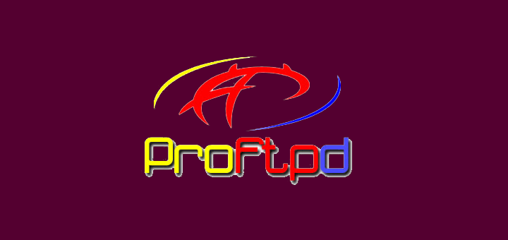

[+] recon
Network Scanning
Host discovery, port sweeps, service banners, and surface-area mapping in controlled labs.
nmap · masscan · arp-scan
Cybersecurity trainee learning how systems are attacked — and how to harden them. Vulnerability assessment, service enumeration, packet analysis, and case-study documentation, all in safe, authorized lab environments.
$ whoami md_jubayer_islam $ cat ./profile.json { "alias": "cyber_trainee", "location": "Dhaka, BD", "focus": "VA, recon, packet_analysis", "toolkit": ["nmap", "hydra", "wireshark", "metasploit"], "status": "available_for_internship" } $ sudo ./engage --safe-mode [+] authorized lab environment loaded [+] ethics_check ............ PASS [+] documentation_layer ..... ACTIVE $ _
Security Tools
Lab Projects
Security Areas
Authorized Practice
Hands-on lab work, not theory dumps.
Host discovery, port sweeps, service banners, and surface-area mapping in controlled labs.
Version fingerprinting and understanding how outdated services expose real risk.
Credential strength, authentication testing concepts, and prevention with rate limiting & MFA.
Reading protocol-level traffic, spotting suspicious patterns, and tracing handshakes.
Scanning, triaging findings, and recommending mitigations with clear severity context.
Turning lab work into case studies: objective → process → findings → remediation.
From curiosity to documented case studies — step by step.
How do systems get owned, and how do defenders stay ahead? That question started everything.
Built isolated VMware environments with attacker + target machines. No prod systems, ever.
Hands-on practice with nmap, hydra, wireshark, nessus/openvas, metasploit, and nikto.
Practical lab work, written up as case studies with findings, mitigations, and lessons learned.
Lab-based, authorized, and fully documented.

Controlled lab on weak credential risk, authentication testing concepts, and defensive best practices for password security.
$ open case-study →
End-to-end case study: service enumeration, vulnerable FTP analysis, controlled exploitation concepts, and mitigation.
$ open case-study →
Upcoming case study for web application security testing, OWASP-style vulnerability classes, and remediation notes.
$ status pending →